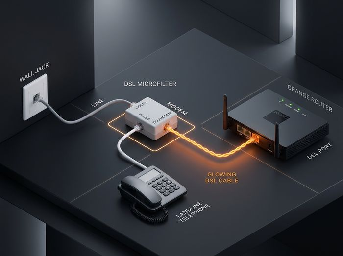

شغّل نت أورانج في 3 دقائق فقط بنفسك!
استلمت راوتر أورانج أو حولت خطك وجاتلك رسالة الـ SMS؟ اتبع الخطوات البسيطة دي بالصور والمحاكاة التفاعلية، والنت هيشتغل معاك فوراً في بيتك.
فحص التوصيل السلكي ولمبات الراوتر
قبل أن تبدأ في الإعدادات، دعنا نتأكد أولاً أن حرارة كابل التليفون واصلة للراوتر بنجاح حتى لا تتعب نفسك دون فائدة!

ما هي حالة لمبة DSL أو Broadband في راوترك؟
اختر شكل وموديل راوترك بالصورة
حدد الراوتر الذي تستخدمه حالياً، سواء راوتر أورانج الرسمي أو راوتر قديم محول من شركة سابقة (وي / فودافون / اتصالات):
دخول صفحة الراوتر وحل مشكلة تحذير الأمان
الكثير من العملاء يتراجعون هنا لأن المتصفح يظهر لهم شاشة حمراء "Your connection is not private". لا تقلق، هذا طبيعي جداً وسنشرح لك كيف تتخطاه في ثانيتين!
راوتر أورانج واي فاي 6 الحديث (ZTE H188A)
192.168.1.1
اضغط على الزر البرتقالي أدناه لفتح صفحة الراوتر في تبويب جديد بجانب هذه الصفحة:
🌐 فتح صفحة الراوتر (192.168.1.1) الآنبيانات الدخول الافتراضية (من ملصق الظهر):
اسم المستخدم: user (بحروف صغيرة)
كلمة المرور: مطبوعة على ملصق ظهر الراوتر (انتبه للحروف الكبيرة والصغيرة).
⚠️ المتصفح أظهر لك: "الاتصال ليس خاصاً / Your connection is not private"؟
معالج التفعيل الذكي والمحاكي التفاعلي
اكتب بيانات اشتراك أورانج والواي فاي، واستخدم المحاكي التفاعلي أو كود التفعيل السحري بنقرة واحدة:
📋 بيانات اشتراك أورانج (من رسالة SMS)
💡 اكتب رقم التليفون الأرضي فقط بكود المحافظة (الراوتر يضيف @Orange تلقائياً).
📶 إعدادات الواي فاي (Wi-Fi) المخصصة
التفعيل الفوري بلمسة واحدة من هاتفك
انسخ البيانات بنقرة واحدة، ثم افتح صفحة الراوتر والصقها في خاناتها لتشغيل الخدمة فوراً:
user (أو admin) وباسورد ظهر الراوتر لتسجيل الدخول.⚡ أداة التفعيل السريعة بلمسة واحدة (Magic Bookmarklet)
بدون تحميل أي برامج أو تطبيقات خارجية! مبرمجة ومجهزة مسبقاً ببيانات خطك لبرمجة الراوتر وحفظ الإعدادات تلقائياً.
تفعيل أورانج ثم اضغط حفظ.تفعيل أورانج، امسح الرابط القديم بالكامل والصق الكود المنسوخ بدلاً منه واضغط تم.192.168.1.1، اضغط على شريط العنوان واكتب كلمة تفعيل واضغط على الإشارة المرجعية... ومبروك! سيقوم بملء البيانات والضغط على Apply فوراً! 🎉تفعيل أورانج ثم اضغط حفظ.192.168.1.1، اضغط على شريط العنوان واكتب كلمة تفعيل، واختر النتيجة التي بجانبها نجمة ⭐... وستتم البرمجة وحفظ الإعدادات تلقائياً!Ctrl + Shift + B على لوحة المفاتيح).192.168.1.1 واضغط على زر الإشارة المرجعية بضغطة واحدة... وستتم البرمجة والتفعيل في ثانية!إضافة متصفح أورانج الذكية (Chrome & Edge Extension)
تثبت على لابتوب العميل أو كمبيوتر الفرع وتفتح نافذة المساعد العائم تلقائياً فوق صفحة 192.168.1.1 بدون أي تدخل يدوي.
مبروك! راوترك اتبرمج والخدمة جاهزة للعمل
لمبة الإنترنت ستتحول للأخضر الآن. إليك أهم الأدوات الحصرية من فرع أورانج للحفاظ على باقتك ومعرفة أقصى سرعة لخطك:
حاسبة كفاءة وجودة خط التليفون (Line Health)
اكتب قراءات الخط من صفحة الراوتر (Status -> DSL Info) لتعرف مسافة الكابينة وأقصى سرعة يتحملها سلكك:
🚀 أقصى سرعة يتحملها خطك بدون تقطيع: 85 ميجابايت/ثانية
📦 الباقة الموصى بها في أورانج: باقة VDSL 70 إلى 100 ميجا
كارت كود الـ QR لشبكة الواي فاي
اطبع هذا الكارت أو احفظه على موبايلك، أي ضيف يمسحه بكاميرا الموبايل يتصل بالواي فاي فوراً بدون كتابة الباسورد:
حماية الأسرة والأطفال (Clean Family DNS)
احمِ أولادك وبيتك من المواقع الإباحية والروابط الخبيثة عبر تغيير الـ DNS في الراوتر بضغطة زر:
الأساسي:
1.1.1.3 | الثانوي: 1.0.0.3
تحديد سرعة الواي فاي وحماية الباقة
هل باقتك تنتهي في منتصف الشهر بسبب فيديوهات يوتيوب وتيك توك عالية الجودة؟ حدد تردد القناة وخفض المدى لتوفير الباقة:
كشف نوع الأجهزة المتصلة بالواي فاي وطرد المتطفلين
شاكك إن حد سارق الواي فاي؟ اكتب أو الصق عنوان الماك (MAC Address) من صفحة الراوتر (أو اختر من الأمثلة أدناه) لمعرفة نوع الجهاز واسم الشركة المصنعة وحظره فوراً:
إعادة تشغيل الراوتر وتحديث الـ IP بزر واحد
النت بطيء أو البنج عالي؟ بدل ما تشد فيشة الكهرباء وتبوظ سوفتوير الراوتر، انسخ كود إعادة التشغيل الذكي ليقوم الراوتر بعمل Restart وسحب IP جديد فائق السرعة:
قياس سرعة الاستجابة لخوادم أورنج والألعاب
افحص زمن الوصول (Latency / Ping) لسيرفرات الألعاب (ببجي / فالورانت / فيفا) ومحركات الـ DNS للتأكد من استقرار خطك: